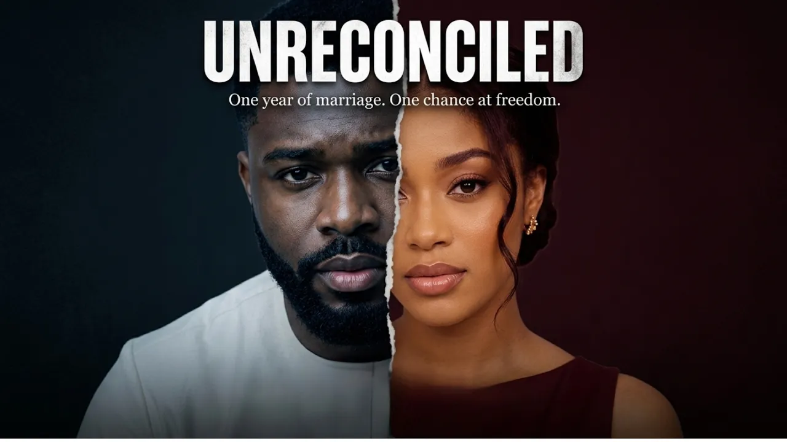

Nelson Edeh — YouTube
Practical tutorials, creative workflows, and behind-the-scenes breakdowns that help creators make better content with AI.
Visit Channel →Helping creators make professional quality content with AI.
Practical tutorials, creative workflows, and real-world insights for modern creators.
I help creators learn how to turn ideas into high-quality content using AI, from planning and video creation to editing and publishing. Through practical workflows, real projects, and proven techniques, I help creators build the skills and confidence to create content that stands out.
Practical tutorials, creative workflows, and behind-the-scenes breakdowns that help creators make better content with AI.
Visit Channel →Original AI-powered films and creative projects produced under my studio, Nadidove Films — that showcase the workflows, storytelling, and production techniques I teach.

A suspenseful animated short film following a late-night keke driver who realizes too late that his last passenger isn't who she seems.
Demonstrates consistent AI characters across multiple scenes using production-ready workflows.

After filing for divorce less than a year into their turbulent marriage, Sandra and Desmond are forced into court-ordered counseling.
An original AI assisted drama combining cinematic storytelling, custom visuals, and an original dialogue score.
Whether you want to learn AI content creation or you're a brand looking to partner, I'd love to hear from you.